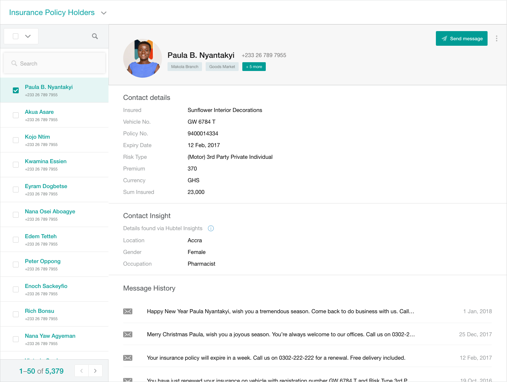

Hubtel at the time was a company in an ongoing pivot. From running a successful SMS messaging business, the next direction was to go beyond messaging to build a platform for businesses to deepen their engagement with their customers. This included adding on a Sales Platform and a CRM Platform to compliment messaging.
Hubtel Ltd.
Product UX Designer
December 2017 - March 2018
At the time, we (I was an employee) had businesses who had been messaging their customers for years, using the platform for pushing ads, setting transactional alerts, issuing SMS receipts, etc. What we learned was that customers had over time, created various complex spreadsheets to manage their customer information. And whenever they wanted to e.g. send out birthday wishes, it was a laborious task of going back to these spreadsheets. It was cumbersome. Working with the product manager for this new Customers app on the Hubtel platform, I had to design the experience for businesses to manage their customers and gain insights that would be used to serve them better. The overarching goal was to provide business with insights to be more intentional about their interactions with their customers.
Above is an image of a selection of screens and widgets from the Hubtel Customers app.
1. From Spreadsheet to Click-Click:
One key objective was to understand the use of spreadsheets in the old messaging platform, and design an experience to make transitioning to the Customers app smoother. One key learning (and difficult challenge) was trying to figure out how to deal with spreadsheet entries we didn't understand. We could either be too smart (i.e. automate everything) but with a mistake, cause unexpected frustration. Or we could be too dumb (i.e. everything is done manually) and be a pain to use. The design we settled with was a hybrid, and that tries to determine data stypes from the record entries, and present them to the user to make final edits before saving to the Hubtel databases.
Above is a video of the sequence for adding contacts using the bulk upload feature.
2. Simplicity for Non-Technical Users:
For users who were new to the platform, needing to get setup quickly, we needed to create alternatives that were simple and easy to use. A user could create a form structure that can be used to collect information over various channels including USSD, web forms, API integrations, etc. The big challenge here was making the concept of data types clear to users with no technical backgrounds. I worked closely with the Product Manager, to structure the user-flows through this sequence, and write copy that was clear to non-technical users.
Above is a video of the single WYSWIG contact uploader.
3. What Does it Really Mean to Rethink Customer Service?
Once we add successfully designed the flows for adding customers, we needed to understand how users will use the app to serve their customers better. An earlier iteration displayed the customers in a table, but when we tested, we realised it was cumbersome to go through multiple contacts, so we reviewed the design to show both the list and details on one screen. This allowed us to present a customer's complete profile, pulling in message history, purchase history, biodata etc. A user looking at this list can have a better idea who their customer is, and how to serve them.
Above is a screen of the contact list, showing both lists and details on one screen.
✱This product was rewarding to work on. The biggest challenge was designing the platform for an extensible future. Looking at the road map, we knew the directions the product could possibly take so every design decision was scrutinised through this lens.